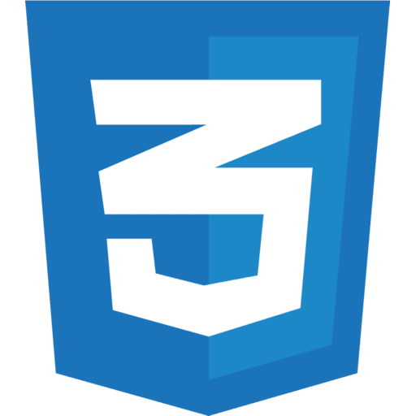
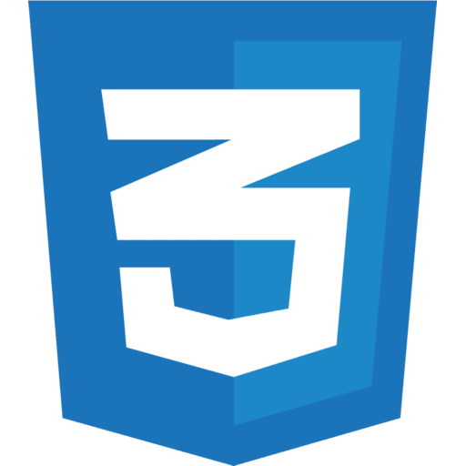

Featured Projects
Job Starter


Helps first time job seekers in London find entry-level roles easily. Integrated Adzuna API to fetch jobs, added job filters (search, job type, sector) and implemented Google Maps routing. Automated job updates using cronjob via GitHub Actions. Automated email alerts using Firebase and Resend API.
Intern-Track

Online platform for students to aid them in managing their internship/placement applications. Built with React on the frontend, Next.js API routes for the backend, MongoDB for the database, JWT with LocalStorage for authentication, Upstash Redis for rate limiting and hosted on Vercel.

TFL Watch
Chrome browser extension that displays predicted arrivals for tube, elizabeth and bus lines. Supports searching of stations and hubs. Uses chrome alarms and storage to refresh predictions in the background. Handles edge cases like when API returns no data by displaying valid error messages.

Code
Additional Projects

Work Portal
Python desktop app featuring a employer interface for creating & managing employee records, and employee interface for associated PDF uploads like CVs. Built with PySide6 and uses MongoDB for persistent storage.
Code
REDZOMBIES


Wave-based shooter featuring mechanics such as differing weapons, wave progression, powerups, traps and a variety of enemies. Heavily inspired by the round-based zombies mode in Call of Duty. Built using Unity (2020) and C#. Scored 65/70 on A-Level Computer Science coursework.
Code

Play
Set Logic

Java utility that deals with set operations such as the union, intersection or complement of two sets. Can also build numerical sets and comes with a GUI built with Swing.
Code

Sinister Web

Click and point, multiple options horror-thriller video game that's inspired by the horrors of the dark web. This prototype was made using Godot 4.0 and GDscript and pixel art was done by myself.
Code
Play
Blackjack
Python program that features users profiles, drawing cards, trump card logic and dealer behaviour. Adheres to the procedural programming paradigm and uses SQLite for storing player stats/history and Tkinter for the GUI.
Code
PyPI
 
